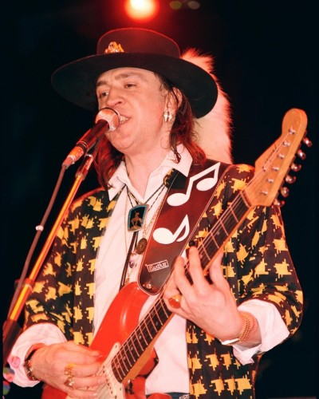
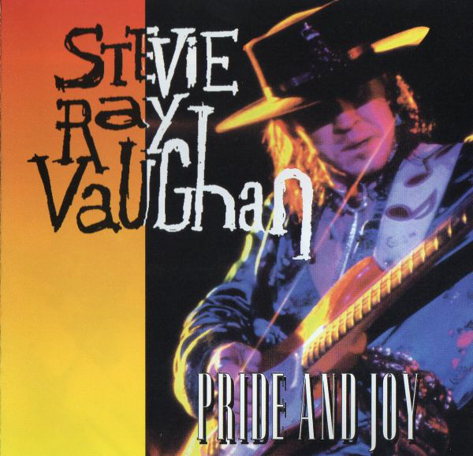

Who was Stevie Ray Vaughan?
Was an American musician, singer, songwriter, and record producer, and one of the most influential guitarists in the revival of blues in the 1980s. He is commonly referred to as one of the greatest guitar players of all time. Vaughan was born and raised in Dallas, Texas. He began playing guitar at the age of seven, inspired by his older brother Jimmie. He dropped out of high school in 1971 and moved to Austin the following year. He played gigs with numerous bands, earning a spot in Marc Benno's band the Nightcrawlers and later with Denny Freeman in the Cobras, with whom he continued to work through late 1977. He then formed his own group Triple Threat Revue, but he renamed them Double Trouble after hiring drummer Chris Layton and bassist Tommy Shannon. He gained fame after his performance at the Montreux Jazz Festival in 1982, and his debut studio album Texas Flood charted at number 38 in 1983, a commercially successful release that sold over half a million copies. He headlined concert tours with Jeff Beck in 1989 and Joe Cocker in 1990, but he died in a helicopter crash on August 27, 1990 at the age of 35. It was 36 days before his 36th birthday..

Pride and Joy
is a song by Texas singer/guitarist Stevie Ray Vaughan and his backup band Double Trouble. It is an original composition by Vaughan and appeared on his 1983 Epic Records debut album Texas Flood. "Pride and Joy" was also released as Vaughan's first single and has become one of his best-known songs. "Pride and Joy" was a feature of Vaughan live repertoire before he recorded it. According to Double Trouble drummer Chris Layton, Vaughan wrote it for a new girlfriend at the time (a later fight with her inspired his "I'm Cryin'"). Vaughan's song was released as a single and reached number 20 in Billboard magazine's Mainstream Rock chart. Bonnie Raitt and the Charlie Daniels Band have recorded renditions of the song. It's one of the most recognizable riffs and solos of all time. The combination between technique and just pure raw talent/passion made this record memorable and timeless. An absolute stunner and fucking difficult. It's blues like it used to be. This song sits with the greatests among with Beatles' songs, B.B. King's songs and more.
